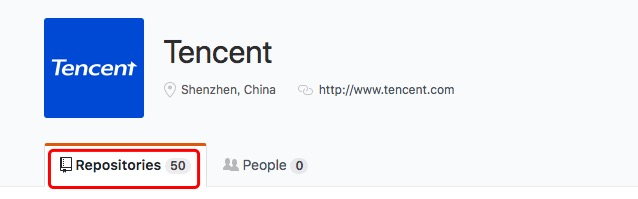
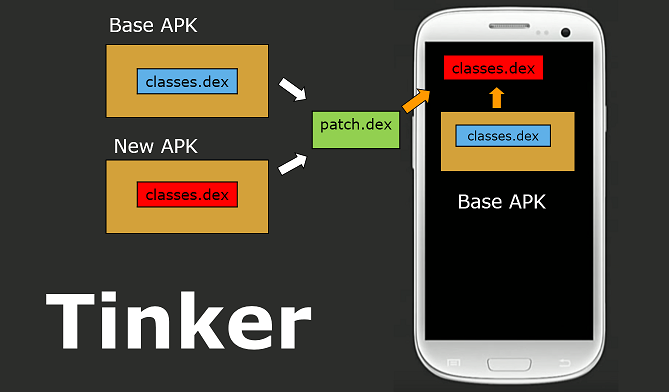
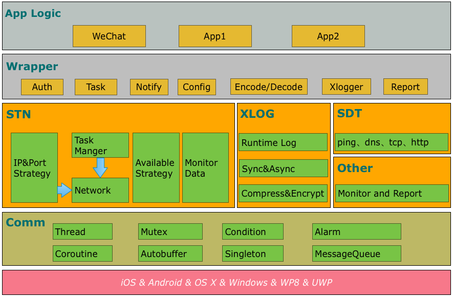
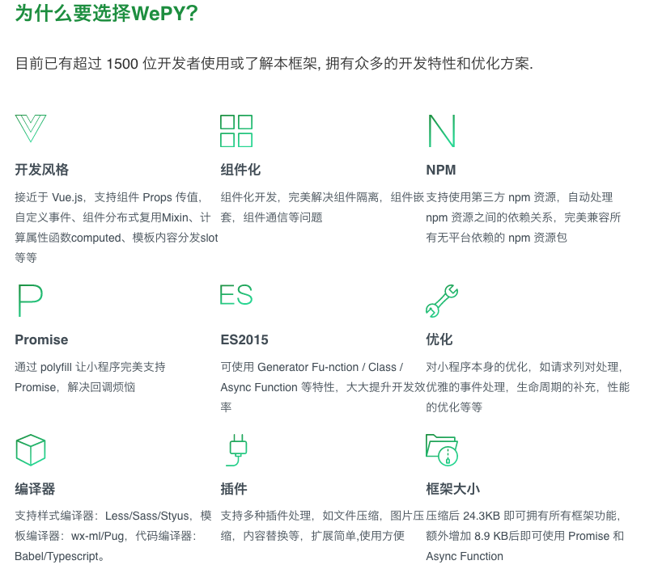
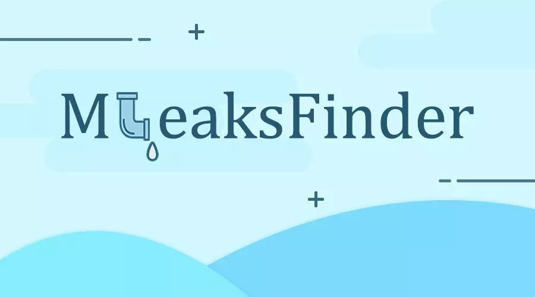

Tencent has quite a lot of open source projects. On Github(https://github.com/Tencent), there are 50 open source projects.

1. Android Hotfix Framework Tinker
Tinker is WeChat's official Android hot patch solution. It supports dynamically delivering code, SO libraries, and resources, allowing applications to update without needing to be reinstalled. Of course, you can also use Tinker to update your plugins.
It mainly includes the following parts:
- Gradle compilation plugin: tinker-patch-gradle-plugin
- Core SDK library: tinker-android-lib
- Command-line version for non-Gradle users: tinker-patch-cli.jar
Source code address:https://github.com/Tencent/tinker
Documentation address:https://github.com/Tencent/tinker/wiki

2. WeChat Client Cross-Platform Component Mars
Mars is WeChat's official terminal basic component. It is a business-independent, platform-independent basic component written in C++. It has been integrated into WeChat clients such as Android, iOS, Mac, Windows, WP, and UWP.Note: Currently only Android, iOS, Mac, and Windows platforms are supported. Other platforms will be supported soon in subsequent versions.
It mainly includes the following parts:
- Comm: Basic library, including socket, threads, message queues, coroutines, and other basic tools.
- Xlog: General log module, fully considering the characteristics of mobile terminals, providing log functions with high performance, high availability, security, and fault tolerance.
- SDT: Network diagnosis module.
- STN: Signaling transmission network module, responsible for the small-data signaling channel between terminals and servers. It contains a wealth of optimization experience and achievements from WeChat clients on mobile networks and has been tested by WeChat's massive user base.
Source code address:https://github.com/Tencent/mars
Documentation address:https://github.com/Tencent/mars/wiki

3. Mini Program Component-Based Development Framework wepy
WePY is a framework that enables Mini Programs to support component-based development. Through precompilation, it allows developers to choose their preferred development style to build Mini Programs. The framework's detailed optimizations and the introduction of Promise and Async Functions are all aimed at making Mini Program development projects simpler and more efficient.
During development, the WePY framework referenced some syntax styles and functional features of existing frameworks such as Vue, re-encapsulated the native Mini Program development model, moved closer to the MVVM architecture pattern, and supports some new features of ES6/7.
Source code address:https://github.com/Tencent/wepy
WePY homepage:https://tencent.github.io/wepy/
Documentation address:https://tencent.github.io/wepy/document.html#/
WePY resource summary:https://github.com/aben1188/awesome-wepy

4. Lightweight High-Performance Hybrid Framework VasSonic
VasSonic is named after the Sega game character Sonic the Hedgehog. It is a lightweight, high-performance Hybrid framework developed by Tencent's VAS (SNG Value-Added Products Department QQ Membership) team, focusing on improving page first-screen load speed. It perfectly supports static direct-output pages and dynamic direct-output pages, and is compatible with offline package solutions.
Currently, businesses such as QQ Membership, QQ Game Center, QQ Personalization Mall, QQ Shopping, QQ Wallet, and Penguin Esports are already using it. Daily PV is over 120 million (only counting data within Mobile QQ), and the average page first-screen load time is below 1 second.
Source code address:https://github.com/Tencent/VasSonic
Documentation address:https://github.com/Tencent/VasSonic/wiki
| Figure 1: Before using Sonic mode | Figure 2: After using Sonic mode |
|---|---|
 |
5. WeChat Team Front-End Development Tool WeFlow
WeFlow is an efficient, powerful, and cross-platform front-end development workflow tool.It currently supports front-end build work for third-party partner teams of projects such as WeChat Games, WeChat Moments Ads, and WeChat City Services. If you are more accustomed to command-line operations, you can directly use the core of WeFlow: tmt-workflow, developed based on Gulp :).
Source code address:https://github.com/Tencent/WeFlow
Official website:https://weflow.io/

6. Mobile Database Framework WCDB
WCDB is an efficient, complete, and easy-to-use mobile database framework based on SQLCipher, supporting iOS, macOS, and Android.Basic features:
- Easy to use: WCDB supports retrieving data and combining it into an object with just one line of code.
- High performance: WCDB achieves more efficient performance through optimizations at the framework layer and in SQLCipher source code.
- Complete: WCDB covers required functions for various database-related scenarios.
Source code address:https://github.com/Tencent/wcdb
Documentation address:https://github.com/Tencent/wcdb/wiki

7. Machine Learning Framework Angel Based on Parameter Server Concept
Angel is a high-performance distributed machine learning platform developed based on the Parameter Server concept. It has been repeatedly tuned based on massive internal data from Tencent, and has broad applicability and stability. The higher the model dimension, the more obvious the advantage. Angel was jointly developed by Tencent and Peking University, balancing the high availability of industry and the innovation of academia.
Angel's core design concept revolves around models. It reasonably splits high-dimensional large models across multiple parameter server nodes, and through efficient model update interfaces and operation functions, as well as flexible synchronization protocols, it easily implements various efficient machine learning algorithms.
Angel is developed based on Java and Scala, can be directly scheduled and run on the community's YARN, and based on PS Service, supports Spark on Angel. In the future, it will support graph computing and deep learning framework integration.
Source code address:https://github.com/Tencent/angel
Documentation address:https://github.com/Tencent/angel

8. Automatic Memory Leak Detection Tool MLeaksFinder
MLeaksFinder is an automatic memory leak detection tool for the iOS platform open-sourced by Tencent. After introducing MLeaksFinder, you can automatically detect and warn about memory leaks during daily development and debugging of business logic.
Developers do not need to open additional tools such as Instruments, nor do they need to run extra processes to find memory leaks. Moreover, since developers can discover memory leaks as soon as they run the relevant business logic after modifying code, this allows them to quickly realize where the problem is in the code. This timely detection of memory leaks greatly reduces the cost of fixing memory leaks.
It has the following features:
- Automatically detects memory leaks and scenarios where memory is not released in time.
- Builds the reference chain of leaked objects relative to ViewController to help developers locate problems.
- Does not intrude into business logic; takes effect immediately upon introduction, without modifying any code or importing header files.
Source code address:https://github.com/Tencent/MLeaksFinder
WeRead team blog:http://wereadteam.github.io/

9. UI Library WeUI
WeUI is a UI library designed by WeChat's official design team specifically for WeChat mobile Web applications. WeUI is a set of basic style libraries consistent with WeChat's native visual experience, tailored for WeChat Web development, making the user's perception more unified. It includes elements such as button, cell, dialog, toast, article, icon, and more.Source code address:https://github.com/Tencent/weui
Documentation address:https://github.com/Tencent/weui/wiki
Mini Program version source code:https://github.com/Tencent/weui-wxss/
Online examples:https://weui.io/

10. Distributed Backend Service Engine MSEC
The Millisecond Service Engine (MSEC) is open-sourced by Tencent's QQ team. It is a backend DEV&OPS engine, including RPC, name lookup, load balancing, monitoring, release, and capacity management. Millisecond Service Engine features:
- Access between modules uses RPC, so developers do not need to care about network and message formats, and can develop distributed services like writing standalone programs.
- Automatic load balancing and fault tolerance; automatically handles conditions such as single-machine failures and local network fluctuations, providing high service availability.
- Supports C/C++/Java/PHP languages. If C/C++ is chosen, it supports coroutines, combining both development and runtime efficiency.
- Web-based management interface.
- Easy deployment: servers that require complex deployment are installed using Docker images.
- Compared with solutions pieced together from other open source components, the Millisecond Service Engine is more systematic and has more thorough team standardization.
Source code address:https://github.com/Tencent/MSEC
Official website:http://msec.qq.com/